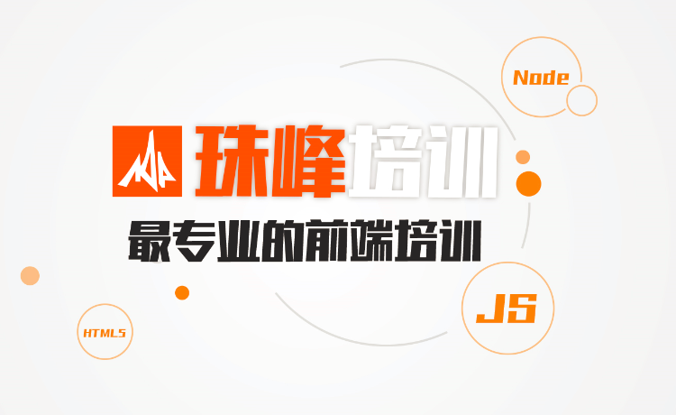

| 招聘需求表 | |||||
|---|---|---|---|---|---|
| 部门 | 招聘岗位 | 招聘人数 | |||
| 从事该岗位的总人数 | 现在部门总人数 | ||||
| 需求原因 | |||||
| 部门负责人签名 | 日期 | ||||
| 人事部门审批 | |||||
| 总经理审批 | |||||
珠峰”走到今天，我最引以为豪的就是：我们没有招生部门，但每年招收的学生人数倍增；我们没有就业部门，但超过百分之二、三十的学生入职BAT等一流公司。我们在创造一个叫“珠峰模式”的奇迹。珠峰培训能够走到今天，靠的是让学生升华，最终实现自己的成功。
 珠峰培训是中国前端开发知名品牌，七年前端培训，以专注立身；70%的同学来自老学员推荐，以诚信立业。我们专注的特色培训有：javascript培训,node.JS培训,前端开发培训,HTML5培训,移动端培训...2012年，有一位学员在学习结束后找到了一份不错的工作，她跟我说：“我原来没有看书的习惯，现在睡前都习惯看会《JavaScript高级程序设计》了。”我认为这就是”珠峰”的成功：不仅传授了技术，还让她养成了一个积极向上的好习惯。我们有超过80%的同学都是来自于老同学的推荐。为什么老同学会这么热心的推荐他们的亲朋好友来“珠峰”学习？就是因为他们相信：“珠峰”能够改变他们，“珠峰”是一个积极向上、充满正能量的地方！
通过技术学习，引导人、激励人、提高人、改变人，这是我们的使命。